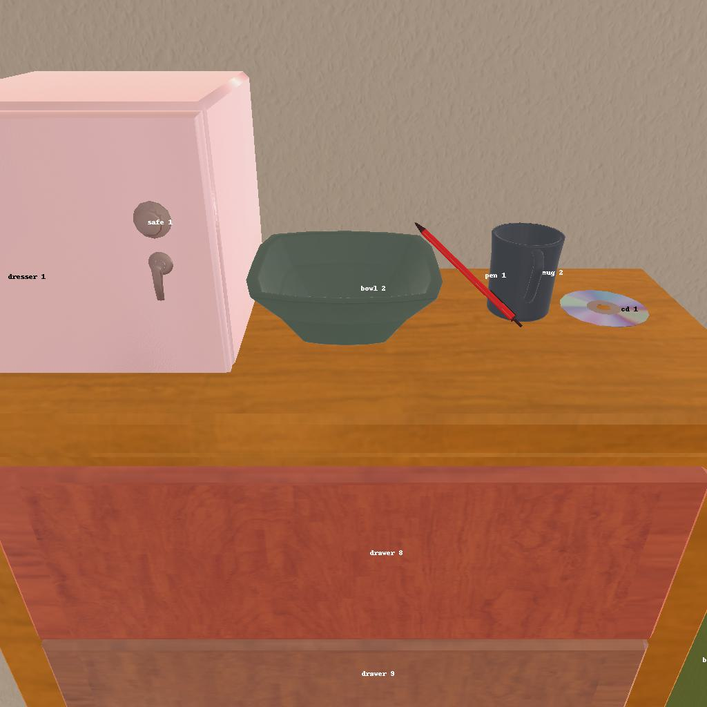

---------------------------------------------------------task: 6---------------------------------------------------------
--------------------------------------------------------------------------------------------------------------------------------------------------------------------
--------------------------------------------------------------------------------------------------------------------------------------------------------------------
Step:--------------------------------------------------------------------------15-------------------------------------------------------------------------------
----------------------------------------
VLM Prompt:
Image1:
**Instruction**
1. Analyze the provided image to identify all visible household objects, focusing on those relevant to the task description "put a cd in safe."
2. Use the analysis of the image and the task hint "The agent must find an object of the desired type, pick it up, find the correct location to place it, and put it down there." to answer the question: what is the most reasonable action in the choices for the task description "put a cd in safe"?
4. Decide and write the answer using the template: The answer is: (i): , where i is the real number. If there is no desired object in the image, search every place based on **Initial Observation** to find the object. And if no one is exactly correct, choose a similar answer.
**Initial Observation**
You are in the middle of a room. Looking quickly around you, you can see bed (1-2), dresser (1), sidetable (1-2), drawer (1-11), desk (1), garbagecan (1), safe (1)
**Answer Choices**
(1): go to bed 1
(2): go to bed 2
(3): go to sidetable 1
(4): go to drawer 1
(5): go to drawer 2
(6): go to sidetable 2
(7): go to drawer 4
(8): go to desk 1
(9): go to garbagecan 1
(10): go to drawer 5
(11): go to drawer 6
(12): go to drawer 7
(13): go to drawer 8
(14): go to drawer 9
(15): go to drawer 10
(16): go to drawer 11
(17): go to safe 1
(18): take bowl 2 from dresser 1
(19): take mug 2 from dresser 1
(20): take cd 1 from dresser 1
(21): take pen 1 from dresser 1
(22): examine dresser 1
**Answer**
Let's think step by step by following the instructions.
----------------------------------------
----------------------------------------
Original Response:
First, we need to identify all visible household objects relevant to the task "put a cd in safe." In the image provided, we can see a dresser labeled "dresser 1" with various objects on top of it. Among those objects, there is a "cd 1." This is the object we need to complete the task.
The safe, labeled "safe 1," is also visible in the image. This is the location where we need to put the cd.
Now, considering the task hint, which states that the agent must find the object, pick it up, find the correct location to place it, and put it down there, the most reasonable action would be to take the cd from the dresser and then go to the safe to place it inside.
Based on the initial observation, the safe is labeled "safe 1," so we do not need to search every place to find the safe or the cd since they are both visible in the image.
Among the answer choices, the action that directly addresses the task description is:
(20): take cd 1 from dresser 1
After taking the cd, the next logical step would be to go to the safe. However, since that specific action is not listed as a choice, we will select the action that allows us to progress towards completing the task.
The answer is: (20): take cd 1 from dresser 1.
----------------------------------------
----------------------------------------
>>> Refine Original VLM Response and Get Pure Action: take cd 1 from dresser 1
----------------------------------------
-----------------------------------------------------------------
Running time: 52.24134683609009 seconds
Total Money: 1.9116100000000003
-----------------------------------------------------------------
-----------------------------------------------------------------
Text Observation:You pick up the cd 1 from the dresser 1.
-----------------------------------------------------------------
UNSUCCEED